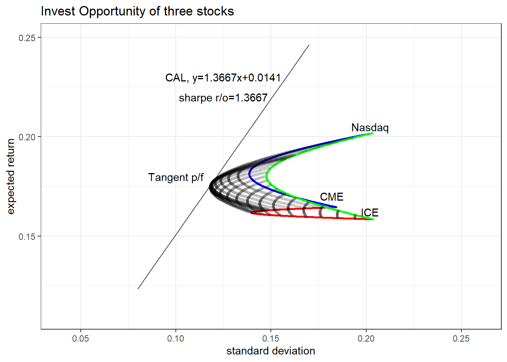
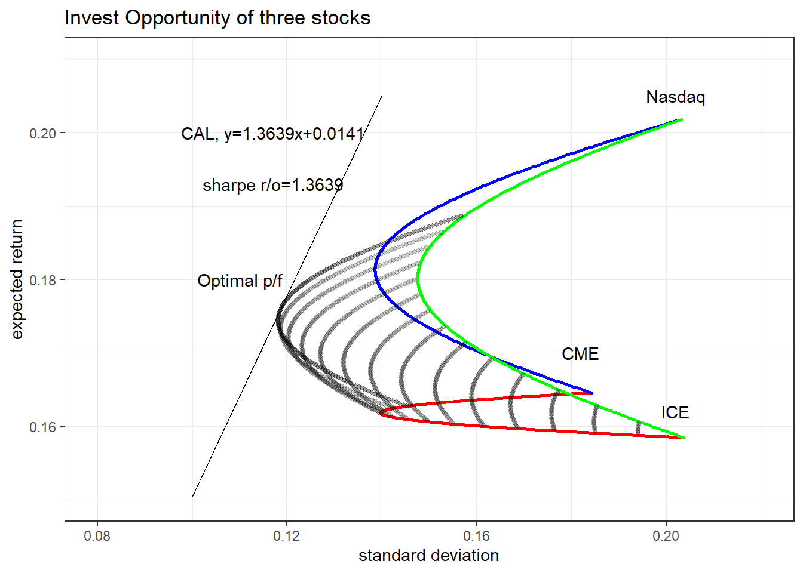

library(tidyverse)
# stocks and market index S&P500 from yahoo finance
cme <- read_csv("investment_hw/cme.csv") %>% tibble()
ndaq <- read_csv("investment_hw/ndaq.csv") %>% tibble()
ice <- read_csv("investment_hw/ice.csv") %>% tibble()
spx <- read_csv("investment_hw/spx.csv") %>% tibble()
# risk-free rate is effective-FFR(federal funds rate)
ffr <- read_csv("investment_hw/fedfunds.csv") %>% tibble()
# set period 10years
strt_dd='20140101'; end_dd='20240331'투자분석 과제2
Problems
Answer
(a)
저는 CME group(CME), ICE(ICE), Nasdaq(NDAQ) 세가지 종목을 선정하였습니다.
선정 배경으로는,
- 제가 거래소 산업에 관심이 많고,
- 세 주식 모두 미국에 상장되어있는 대표적인 글로벌 거래소이며,
- 동일한 거래소 산업이고 S&P500지수의 구성종목이라 동일 선상에서 비교하기 적합할 것으로 보이기 때문입니다.
세 주식의 일별수정주가(Adj. close), 벤치마크지수인 S&P500지수의 일별수정가격, 무위험이자율로 채택한 미연준의 일별 Effective-FFR(Federel Funds Rate)를 활용하였습니다.
기간 : 직전 10년(2014.4 ~ 2024.3)
출처 : [Yahoo Finance](https://finance.yahoo.com/)
산출방법 :
(월수익률) 지난달 말 대비 월말 가격의 로그수익률
(월초과수익률) 월수익률 - 월말 continuous conpounding FFR/12
(월분산) 월/월초과수익률의 표본표준편차
(평균수익률) 월/월초과수익률을 산술평균하여 연환산 (x12)
(평균분산) 월분산을 산술평균하여 연환산 (x12)(b)
# tidy data
raw_data <- tibble()
raw_data <- cme %>% mutate(cme=`Adj Close`) %>% select(Date,cme) %>%
left_join(ndaq %>% mutate(ndaq=`Adj Close`) %>% select(Date,ndaq)) %>%
left_join(ice %>% mutate(ice=`Adj Close`) %>% select(Date,ice)) %>%
left_join(spx %>% mutate(spx=`Adj Close`) %>% select(Date,spx)) %>%
mutate(day=gsub("-","",Date)) %>%
mutate(year=substr(day,1,4)) %>%
mutate(month=substr(day,1,6)) %>%
filter(day>=strt_dd,day<=end_dd) %>%
left_join(ffr %>%
mutate(ffr=FEDFUNDS,
month=substr(gsub("-","",as.character(DATE)),1,6)) %>%
select(month,ffr)) %>%
select(year,month,day,cme,ndaq,ice,spx,ffr,Date)
# using monthly log return and continuous compound rate
raw_data <- raw_data %>%
mutate(ffr=log((1+ffr/100)))
monthly_raw <- tibble()
monthly_raw <- raw_data %>%
group_by(year,month) %>%
arrange(day %>% desc()) %>%
slice(1) %>%
pivot_longer(.,c("cme","ndaq","ice","spx"),
names_to = "name",values_to = "price") %>%
ungroup() %>%
arrange(name,year,month) %>%
mutate(return=log(price)-log(lag(price))) %>% # monthly log return
mutate(excess_return=return-ffr*(1/12)) %>%
filter(as.integer(month)>=201404)
# calculate arithmatic mean&var and var-cov matrix of excess return of stocks
monthly_stat <- tibble()
monthly_stat <- monthly_raw %>%
ungroup() %>%
group_by(name) %>%
summarise(avg_excess=mean(excess_return)*12,
var_excess=sd(excess_return)^2*12,
avg_return=mean(return)*12,
var_return=sd(return)^2*12,
avg_rf=mean(ffr)) # Annualized
# Cov matrix
variance_matrix <- monthly_raw %>%
ungroup() %>%
select(month,name,excess_return) %>%
pivot_wider(names_from = "name", values_from = "excess_return") %>%
select(cme,ice,ndaq,spx) %>%
var()
# Corr matrix
cor_matrix <- monthly_raw %>%
ungroup() %>%
select(month,name,excess_return) %>%
pivot_wider(names_from = "name", values_from = "excess_return") %>%
select(cme,ice,ndaq,spx) %>%
cor()위 방법을 기준으로 산출한 각 주식의 평균초과수익률(연환산) 및 공분산행렬은 아래와 같습니다.
CME 13.3%, ICE 12.4%, Nasdaq 16.6%
monthly_stat# A tibble: 4 × 6
name avg_excess var_excess avg_return var_return avg_rf
<chr> <dbl> <dbl> <dbl> <dbl> <dbl>
1 cme 0.133 0.0332 0.147 0.0332 0.0139
2 ice 0.124 0.0402 0.137 0.0403 0.0139
3 ndaq 0.166 0.0410 0.180 0.0408 0.0139
4 spx 0.0893 0.0230 0.103 0.0230 0.0139Variance-Covariance Matrix of three stocks&Benchmark index
variance_matrix cme ice ndaq spx
cme 0.0027651960 0.001728669 0.001145571 0.0008280002
ice 0.0017286687 0.003352164 0.002121414 0.0016542584
ndaq 0.0011455711 0.002121414 0.003414985 0.0016150778
spx 0.0008280002 0.001654258 0.001615078 0.0019131261Correlation Matrix of three stocks&Benchmark index
cor_matrix cme ice ndaq spx
cme 1.0000000 0.5677880 0.3727903 0.3599944
ice 0.5677880 1.0000000 0.6270012 0.6532342
ndaq 0.3727903 0.6270012 1.0000000 0.6318693
spx 0.3599944 0.6532342 0.6318693 1.0000000(c)
각 주식의 기대수익률과 미래변동성이 과거실현값과 동일하다고 가정하겠습니다.
공매도는 없다고 가정하였으므로 각 주식의 비중이 양수가 되도록 설정하고, 먼저 두개의 주식으로 구성된 포트폴리오의 efficient frontier를 각각 구하도록 하겠습니다.
그런다음, 각
# Portfolio return/vol of variance combinations three stocks
portfolio <- tibble()
portfolio <- tibble(cme=seq(0,0.5,0.001),ice=seq(0,0.5,0.001),ndaq=seq(1,0,-0.002)) %>%
union_all(.,tibble(cme=seq(0,0.5,0.001),ice=seq(0,0.3,0.0006),ndaq=seq(1,0.2,-0.0016))) %>%
union_all(.,tibble(cme=seq(0,0.7,0.001),ice=0.3,ndaq=seq(0.7,0,-0.001))) %>%
union_all(.,tibble(cme=seq(0,1,0.001),ice=seq(1,0,-0.001),ndaq=0)) %>%
union_all(.,tibble(cme=seq(0,1,0.001),ice=0,ndaq=seq(1,0,-0.001))) %>%
union_all(.,tibble(cme=0,ice=seq(1,0,-0.001),ndaq=seq(0,1,0.001))) %>%
mutate(return=cme*monthly_stat$avg_return[1]
+ice*monthly_stat$avg_return[2]
+ndaq*monthly_stat$avg_return[3],
vol=sqrt(cme^2*monthly_stat$var_return[1]
+ice^2*monthly_stat$var_return[2]
+ndaq^2*monthly_stat$var_return[3]
+2*cme*ice*variance_matrix[2]
+2*cme*ndaq*variance_matrix[3]
+2*ndaq*ice*variance_matrix[7])) %>%
mutate(sharpe=(return-monthly_stat$avg_rf[1])/vol)
plot_portfolio <- ggplot(data=portfolio,mapping=aes(x=vol,y=return))+
geom_point(data=portfolio %>% filter(ndaq==0),size=0.5,color="red")+
geom_point(data=portfolio %>% filter(ice==0),size=0.5,color="blue")+
geom_point(data=portfolio %>% filter(cme==0),size=0.5,color="green")+
scale_x_continuous(limits=c(0.08,0.22))+
scale_y_continuous(limits=c(0.13,0.2))+
labs(title = "Invest Opportunity of three stocks",x="standard deviation",y="expected return") +
annotate(geom="text",x=0.18,y=0.155,label="CME")+
annotate(geom="text",x=0.205,y=0.184,label="Nasdaq")+
annotate(geom="text",x=0.2,y=0.142,label="ICE")+
theme_bw()
plot_combination <- plot_portfolio +
geom_point(data=portfolio %>% filter(cme!=0&ice!=0&ndaq!=0&ice!=0.3),size=0.5,color="black",alpha=0.3)
plot_combination(d)
Tangent p/f는 Sharpe r/o를 최대화시키는 세 주식의 조합으로, 위에서 도식화한 투자기회에 대하여 무위험이자율을 y절편으로 가지는 접선을 그려서 시각화할 수 있습니다.
접선의 기울기는 포트폴리오의 초과수익률을 변동성으로 나눈 값으로 Sharpe r/o가 되므로, 이 접선이 CAL에 해당합니다.
sharpe=max(portfolio$sharpe)
tangent <- tibble(vol=seq(0,1,0.01)) %>%
mutate(return=monthly_stat$avg_rf[1]+sharpe*vol)
plot_tangent <- plot_combination+
geom_line(data=tangent)+
annotate(geom="text",x=0.125,y=0.19,label="CAL, y=1.2094x+0.0139")+
annotate(geom="text",x=0.125,y=0.183,label="sharpe r/o=1.2094")+
annotate(geom="text",x=0.112,y=0.162,label="Tangent p/f")
plot_tangentWarning: Removed 95 rows containing missing values or values outside the scale range
(`geom_line()`).
이 때, Tangent p/f의 기대수익률/변동성/구성비율은 아래와 같습니다.
portfolio %>% arrange(sharpe %>% desc()) %>% slice(1)# A tibble: 1 × 6
cme ice ndaq return vol sharpe
<dbl> <dbl> <dbl> <dbl> <dbl> <dbl>
1 0.39 0.234 0.376 0.157 0.119 1.21(e)
만약, 각 주식의 비중이 최소 0.3이 되어야한다면 (d)의 Tangent p/f 구성이 불가능합니다. ICE의 최적비중은 23.4%이기 때문입니다.
따라서, 새로운 최적 포트폴리오는 ICE=0.3으로 고정하고 산출할 수 있으며, 새로운 efficient frontier는 아래와 같습니다.
# Fix ice=0.3
portfolio2 <- portfolio %>% filter(ice==0.3)
sharpe2=max(portfolio2$sharpe)
tangent2 <- tibble(vol=seq(0,1,0.01)) %>%
mutate(return=monthly_stat$avg_rf[1]+sharpe2*vol)
plot_tangent2 <- plot_portfolio +
geom_point(data=portfolio %>% filter(cme!=0&ndaq!=0&ice==0.3),size=0.5,color="black")+
geom_point(data=portfolio %>% filter(cme!=0&ice!=0&ndaq!=0&ice!=0.3),size=0.5,color="black",alpha=0.1)+
geom_line(data=tangent2)+
annotate(geom="text",x=0.125,y=0.19,label="CAL, y=1.2085x+0.0139")+
annotate(geom="text",x=0.125,y=0.183,label="sharpe r/o=1.2085")+
annotate(geom="text",x=0.112,y=0.162,label="Tangent p/f")
plot_tangent2Warning: Removed 95 rows containing missing values or values outside the scale range
(`geom_line()`).
새로운 Tangent p/f의 기대수익률/변동성/구성비율은 아래와 같습니다.
optimal <- portfolio2 %>% arrange(sharpe %>% desc()) %>% slice(1)
optimal# A tibble: 1 × 6
cme ice ndaq return vol sharpe
<dbl> <dbl> <dbl> <dbl> <dbl> <dbl>
1 0.344 0.3 0.356 0.156 0.118 1.21(f)
먼저, 포트폴리오의 로그수익률이 정규분포를 따른다면 표준정규분포표를 참조하여 Value at Risk를 다음과 같이 산출할 수 있습니다.
\[5\%\;VaR=E(r_p)-1.65\sigma_p=0.156-1.65\times 0.118=-3.80\%\]
VaR=optimal$return-1.65*optimal$vol; VaR[1] -0.03802994만약 수익률의 분포가 정규분포가 아니라면, Historical VaR 및 ES(Expected Shortfall)을 산출할 수 있습니다. 이를 데이터의 참조기간인 과거 10년간 최적포트폴리오의 월수익률이 필요합니다.
위의 최적포트폴리오는 CME 34.4%, ICE 30%, Nasdaq 35.6%로 구성된 포트폴리오이므로, 거래비용 등을 무시하고 매월말 포트폴리오의 구성비율을 조정한다고 가정하고 포트폴리오의 명목금액을 \(P_t\), 각 주식의 \((t,t+1)\) 한달간 로그수익률을 \(r_{t,k}\)라고 한다면 \((t,t+1)\)간 포트폴리오의 수익률 \(r_t\)는 다음과 같습니다.
\[P_{t+1}=0.344\times P_t\times e^{r_{t,cme}}+0.3\times P_t\times e^{r_{t,ice}}+0.344\times P_t\times e^{r_{t,ndaq}}\]
\[\Rightarrow 1+r_t=\frac{P_{t+1}}{P_t}=0.344\times e^{r_{t,cme}}+0.3\times e^{r_{t,ice}}+0.344\times e^{r_{t,ndaq}}\]
이를 적용하면 과거 10년간 최적포트폴리오의 월수익률 120개를 얻을 수 있습니다.
이를 오름차순으로 정렬하면 Historical 5% VaR은 6번째 관측값이며, 5% ES는 6개의 관측값의 평균으로 산출할 수 있습니다. 이는 월수익률 기반 VaR 및 ES이므로 \(\sqrt{12}\)를 곱하여 연환산하도록 하겠습니다.
optimal_monthly <- tibble()
optimal_monthly <- monthly_raw %>%
select(month,name,return) %>%
pivot_wider(names_from = "name", values_from = "return") %>%
mutate(pf_return=optimal$cme*exp(cme)+optimal$ice*exp(ice)+optimal$ndaq*exp(ndaq)-1) %>%
select(month,cme,ice,ndaq,pf_return) %>%
arrange(pf_return) %>%
slice(1:6)
optimal_monthly# A tibble: 6 × 5
month cme ice ndaq pf_return
<chr> <dbl> <dbl> <dbl> <dbl>
1 202204 -0.0811 -0.132 -0.124 -0.105
2 202002 -0.0880 -0.111 -0.127 -0.103
3 202003 -0.136 -0.0961 -0.0723 -0.0960
4 202209 -0.0942 -0.106 -0.0458 -0.0771
5 202201 0.00454 -0.0768 -0.159 -0.0728
6 202205 -0.0982 -0.123 -0.0135 -0.0717Annualized 5% VaR은 -24.84%, ES는 -30.38%입니다.
정규분포 가정 하에 산출한 VaR과 큰 차이가 나는 이유는 지난 22년 Covid-19 팬데믹으로 인해 이례적으로 주가가 월 7% 이상 하락하는 급락장이 지속(Left fat tail)되었는데, 이때의 표본이 Historical VaR 산출을 지배한 반면 정규분포 근사시에는 반영되지 않아 차이가 발생하는 것으로 추정됩니다.
hist_VaR <- optimal_monthly$pf_return[6]*sqrt(12)
hist_ES <- mean(optimal_monthly$pf_return[1:6])*sqrt(12)
paste(round(hist_VaR,6), round(hist_ES,6) , round(VaR,6), sep=" / ")[1] "-0.248389 / -0.303774 / -0.03803"(g)